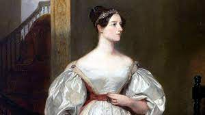
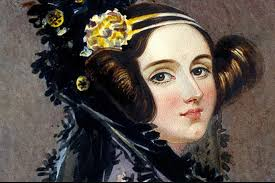
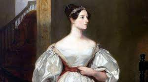
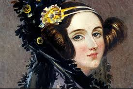

¡Bienvenido a la Biografía de Ada Lovelace!
 



Ada Lovelace fue una matemática y escritora británica nacida el 10 de diciembre de 1815 en Londres, Inglaterra. Fue la hija del poeta Lord Byron y Annabella Milbanke, condesa de Lovelace.
Ada Lovelace es ampliamente conocida por su trabajo con la máquina analítica de Charles Babbage. Aunque la máquina nunca llegó a construirse completamente, Ada Lovelace comprendió su potencial y visualizó que podía hacer mucho más que simples cálculos matemáticos.
Sus ideas pioneras la convierten en la primera programadora de la historia, ya que ideó el concepto de programación de una máquina y sentó las bases para la informática moderna.
Contribuciones Destacadas
Ada Lovelace fue una mujer destacada en su tiempo, y sus contribuciones a la ciencia y la tecnología siguen siendo reconocidas en la actualidad. Algunos de sus logros más destacados incluyen:
- Elaboración de notas sobre la Máquina Analítica: Ada Lovelace trabajó junto a Charles Babbage en la máquina analítica, un dispositivo mecánico precursora de los ordenadores. Sus notas sobre la máquina contenían lo que se considera el primer algoritmo destinado a ser procesado por una máquina, lo que la convierte en la primera programadora de la historia.
- Visión de las Posibilidades de la Máquina: Lovelace no solo se limitó a ver la máquina como una calculadora, sino que comprendió su potencial mucho más allá de los cálculos matemáticos. Visualizó que la máquina podría manipular símbolos y letras, e incluso planteó la posibilidad de que algún día pudiera componer música y arte.
- Visión de Futuras Tecnologías: En sus notas sobre la máquina analítica, Lovelace especuló sobre el potencial de las computadoras en la resolución de problemas más allá de los números, llegando a considerar la capacidad de las máquinas para ser utilizadas en campos como la música, la ciencia y la economía.
Legado e Influencia
El legado de Ada Lovelace es innegable, ya que sus ideas sentaron las bases para la era de la computación. Su visión futurista y su pasión por la ciencia y la tecnología han sido una fuente de inspiración para muchos científicos y programadores en la actualidad.
El Día de Ada Lovelace, celebrado cada año en octubre, es un evento mundial dedicado a la celebración del logro de las mujeres en la ciencia, la tecnología, la ingeniería y las matemáticas (STEM), en honor a su legado y como forma de motivar a las nuevas generaciones de mujeres en estas áreas.
Su contribución a la ciencia y la tecnología sigue siendo recordada y celebrada, y su nombre se asocia con la excelencia y la innovación en el campo de la informática.